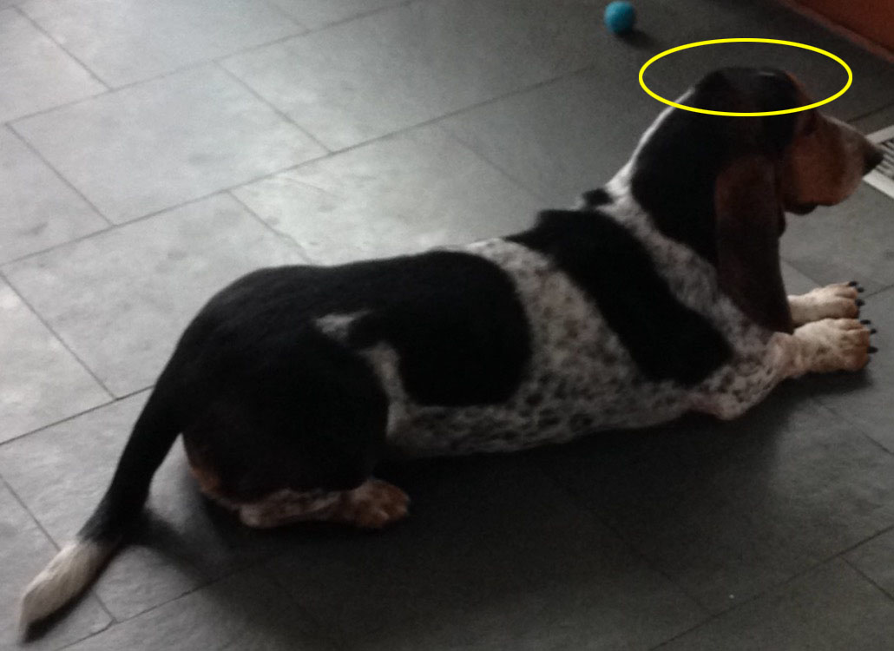

I apologize for the home page. My "master" misrepresents me and dogs everywhere. He thinks me a gibbering fool, when, in reality, it is quite the opposite.
My story begins with a conception: the joke that determined the course of my life.
Nathaniel Posner, my benevolent brother, suggested to Eric and Mommy that they buy a Basset Hound. He was kidding. He thought Basset Hounds looked funny, with their floppy ears and rolls of skin and slobbery jowls.
However, my family soon came to realize how beautiful I am.
*****
They feed me and bathe me and pet me. They revere me, worship me. I am like a
god to them.

(I can also be a)
I was happy where I was -- on the farm in the country. And they stole me, tried to make me their slave and do their bidding. Their attempts to tame me, teach me, calm my wild spirit were pitiful.
*****
They failed to subjugate my mind. I slowly, insidiously, became their master. When I scratch on the door, they open it. When I seek scents, they dutifully follow. When I howl, they feed me.
A strange snack, a pat on the head, an ear rub -- all strange rewards, all failures. Nothing shall shake my stubborn resolve.
And now, sad humans, I will take you through my day.
My Day
My day begins when Jacob guides me from my nest and releases me into the yard. I relieve myself in the allocated location, and am promptly off on a round-the-block walk with Eric. Returing home, I am fed brown slop.
I spend most of the day sleeping, eating, excreting; running, whining, growling, barking, roaring, jumping, climbing. I defend the home.
My masters may deign to take me on a paramble around the block. If they decide not to take me, however, it is no matter. I can leave the home if I so choose.
I can go on my own walk if I please: slither out the unguarded exit hole in a femtosecond. Or I can be so incredibly annoying that they must take me on a walk or risk insanity.

 They failed to subjugate my mind. I slowly, insidiously, became their master. When I scratch on the door, they open it. When I seek scents, they dutifully follow. When I howl, they feed me.
They failed to subjugate my mind. I slowly, insidiously, became their master. When I scratch on the door, they open it. When I seek scents, they dutifully follow. When I howl, they feed me.
 I spend most of the day sleeping, eating, excreting; running, whining, growling, barking, roaring, jumping, climbing. I defend the home.
I spend most of the day sleeping, eating, excreting; running, whining, growling, barking, roaring, jumping, climbing. I defend the home.